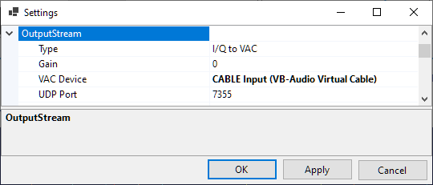
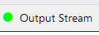

Setting Up Output Stream
SkyRoof can optionally send the raw I/Q data or demodulated audio, either to a Virtual Audio Cable (VAC) or as a stream of UDP packets. The data are sent as 32-bit floating point values in the IEEE 754 format. The sampling rate is 48 kHz in all streaming modes.
Configuring
Click on Tools / Settings in the main menu to open the Settings window:

Type - select the stream type:
- I/Q to VAC;
- Audio to VAC;
- I/Q to UDP;
- Audio to UDP.
Gain - gain or attenuation, in dB, that will be applied to the stream data;
VAC Device - the Virtual Audio Cable device to use;
UDP Port - the UDP port number to use.
Output streaming can be turned on and off by clicking on the Output Stream label on the status bar:
